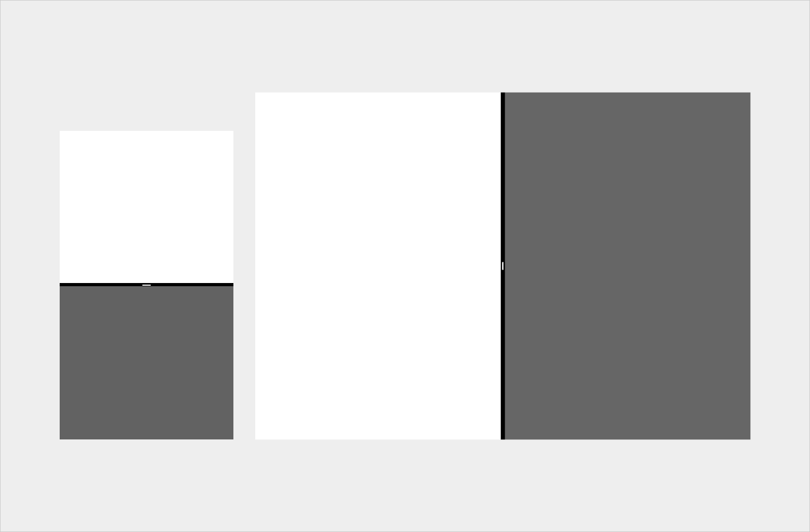

用法
用户主动激活
应用不能自发的进入分屏模式，用户必须主动激活。
启动新的活动
当应用唤醒一个新的活动时，它会默认显示在屏幕的相同部分。应用的尺寸会被重新调整来适配分屏模式（除非你的应用不支持分屏模式）。
分屏模式下，遵守以下标准，应用可以在屏幕的另一半启动新的活动：
- 原有的活动与新的活动相关，并且都支持分屏模式
- 任务的完成需要应用一次展示两个活动，并且会隐藏其他已达开应用
- 清楚的指出应用将会进入分屏模式，比如按钮上写着「在新窗口打开」

手机的纵向分屏模式（左图）和平板的横向分屏模式（右图）